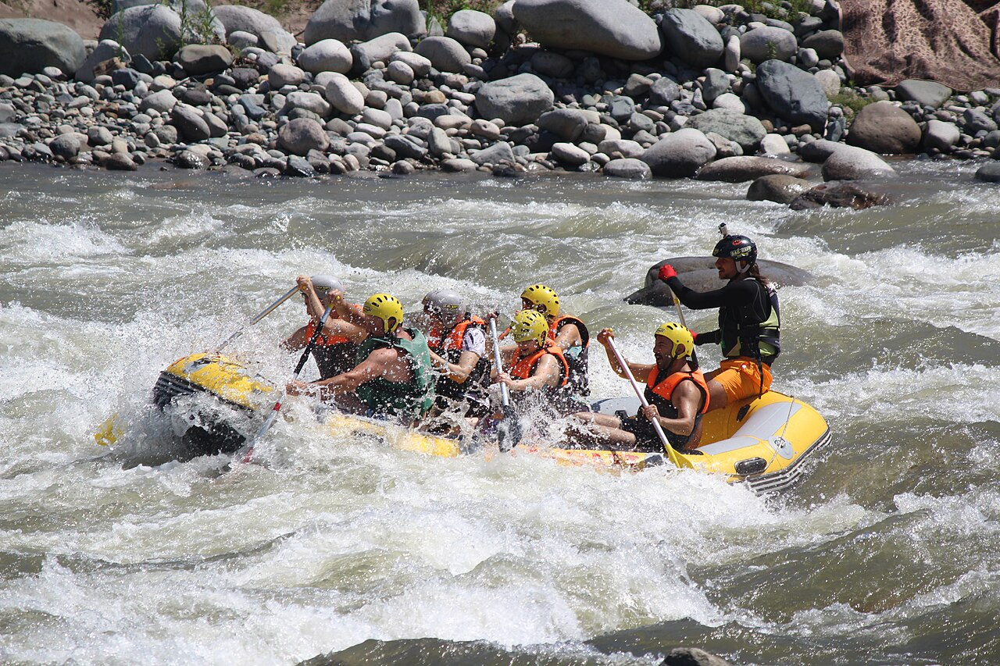

Our mission is simple: get you on the river, keep you safe, and send you home with a story worth telling. Every trip is led by certified guides who love the water as much as you will. Paddle hard, laugh loud, and let the river do the rest.

Our mission is simple: get you on the river, keep you safe, and send you home with a story worth telling. Every trip is led by certified guides who love the water as much as you will. Paddle hard, laugh loud, and let the river do the rest.
Wild Oars began in 2009 with one battered raft, two paddles, and a pair of friends who couldn't stay off the river. What started as weekend trips for family and neighbors quickly grew into a full outfitter. Today our team of guides leads thousands of adventurers each season, from calm scenic floats to roaring Class IV rapids, while still keeping the small-crew spirit that got us started.